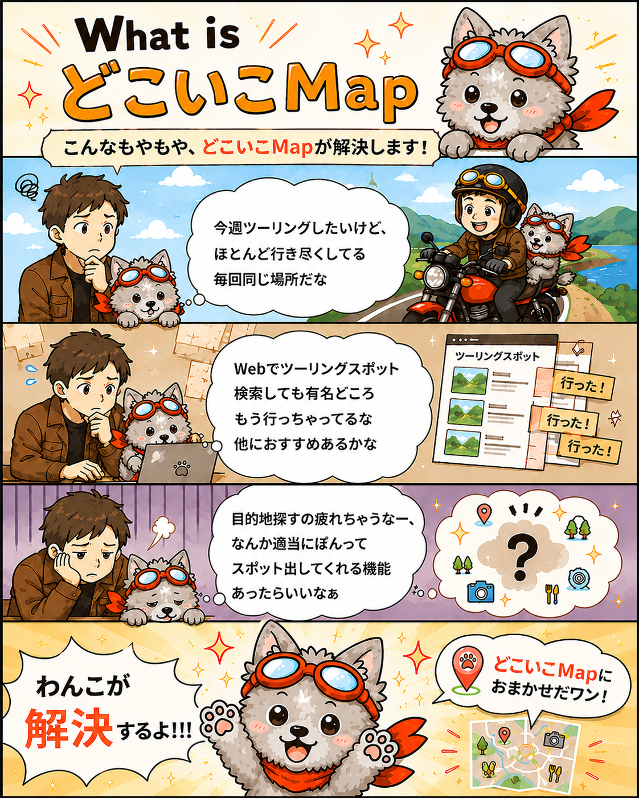
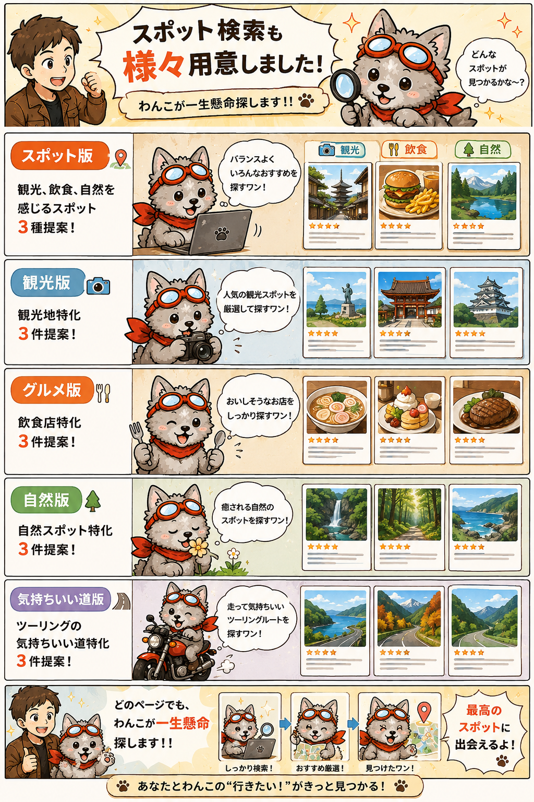

こんなもやもや、あるあるじゃない？
こんなもやもや、どこいこMapが解決します！

今週ツーリング、ドライブしたいなぁ。
でも、ほとんど行き尽くしてて毎回おんなじ……。
そんな時、わんこが目的地探しをお手伝いします！

どこいこMapなら！！
出発地と走りたい時間を選ぶだけで、
結果をランダムに提案
今まで知らなかった、目をつけてなかったスポットが見つかるかも✨✨
「なんか適当にぽんって出してほしいなぁ」って時に使ってみてください！
使い方はかんたん
3ステップで目的地探し。
出発地を入力
自宅付近のコンビニ、最寄駅、出先の場所などでOKです。
走りたい時間を選ぶ
片道でどれくらい走りたいかを選びます。
高速・有料道路を選択
使う・使わないを選ぶと、条件に合わせて候補を提案します。
出先でも使える
最初の目的地のあと、
「このあと何しよう？」ってあるあるじゃないですか？？
日光東照宮まできた！
で、、このあとどうする？？
そんな時は！
現在地取得ボタンをポチして、移動時間を決めちゃって、スポットを提案！！
※現在地はおおよその場所として取得できます。
ちょっと安心
提案するスポットは、Googleの高評価も参考に選出します。
完全に知らない場所だとちょっと不安なので、評価のあるスポットを中心に選出します。
まあまあ安心！！笑
いろいろ用意しました！
スポット検索も様々用意しました！

どのページでも、わんこが一生懸命探します！！
あなたとわんこの「行きたい！」がきっと見つかる！
どこいこMapで、
ちょー簡単に目的地探し。
ツーリングやドライブの「どこ行こう？」を、わんこと一緒に楽しく決めてみてください。
さっそく使ってみる